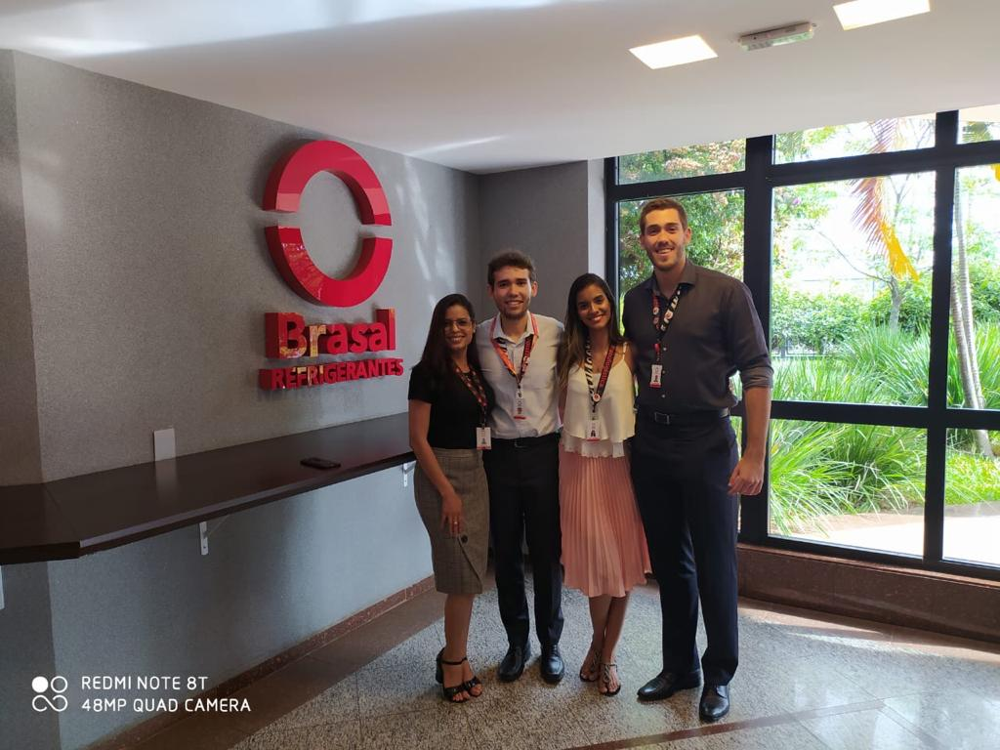
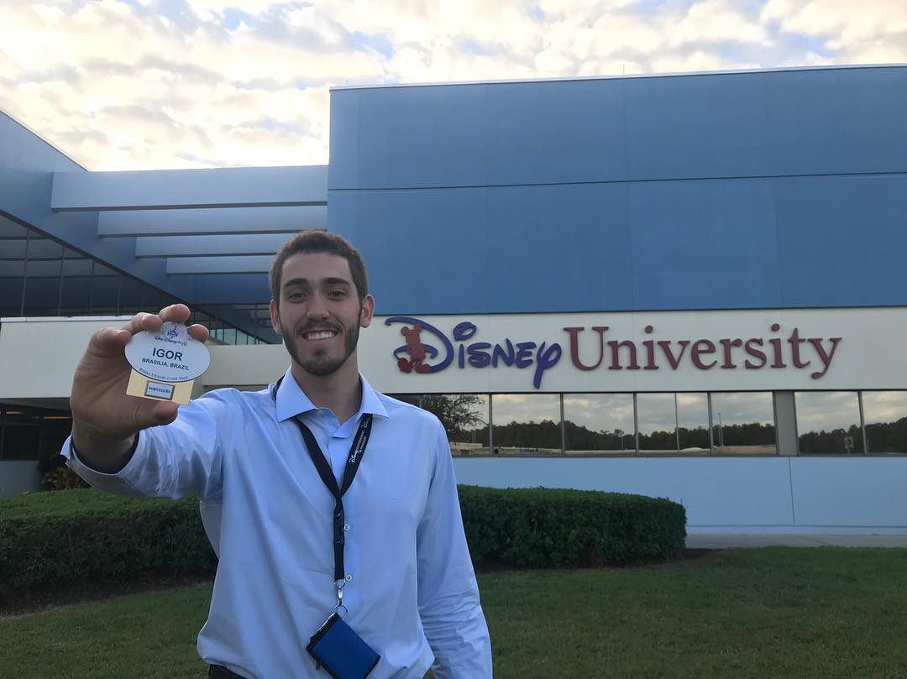
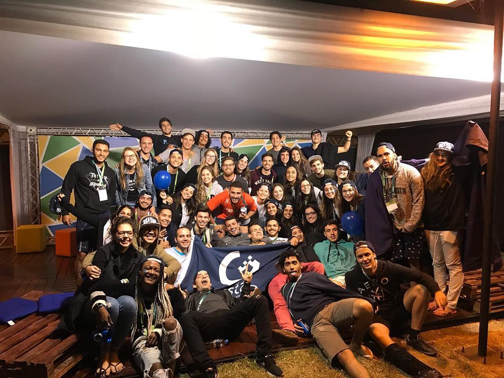
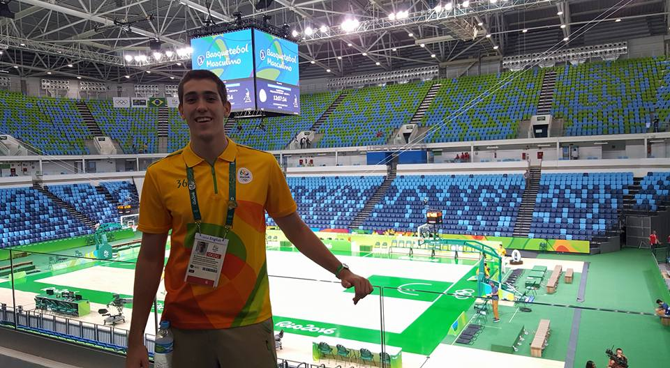
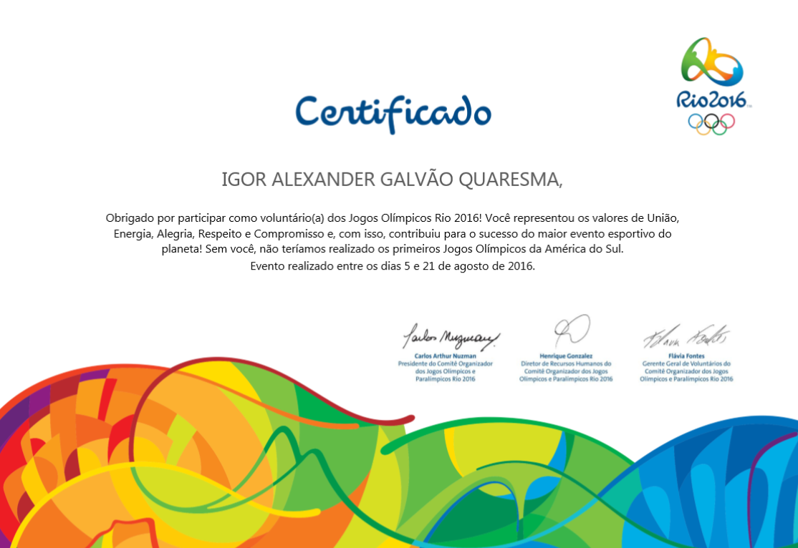
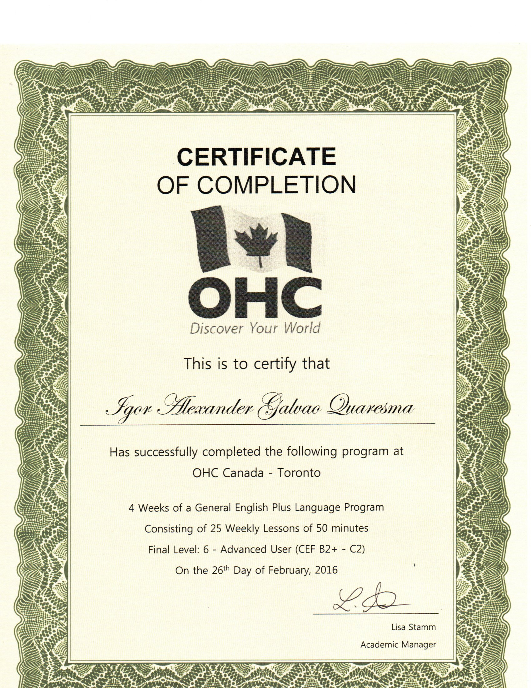
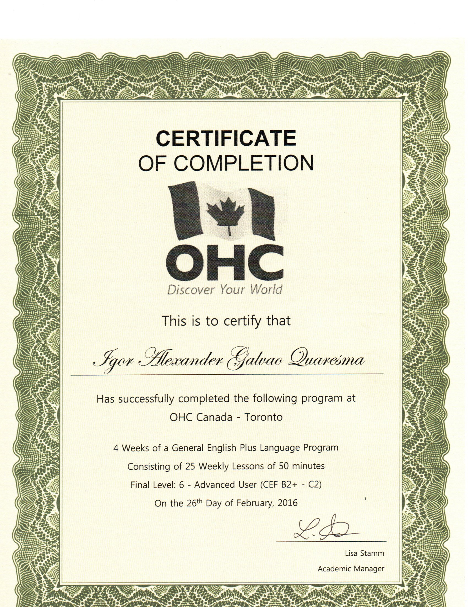
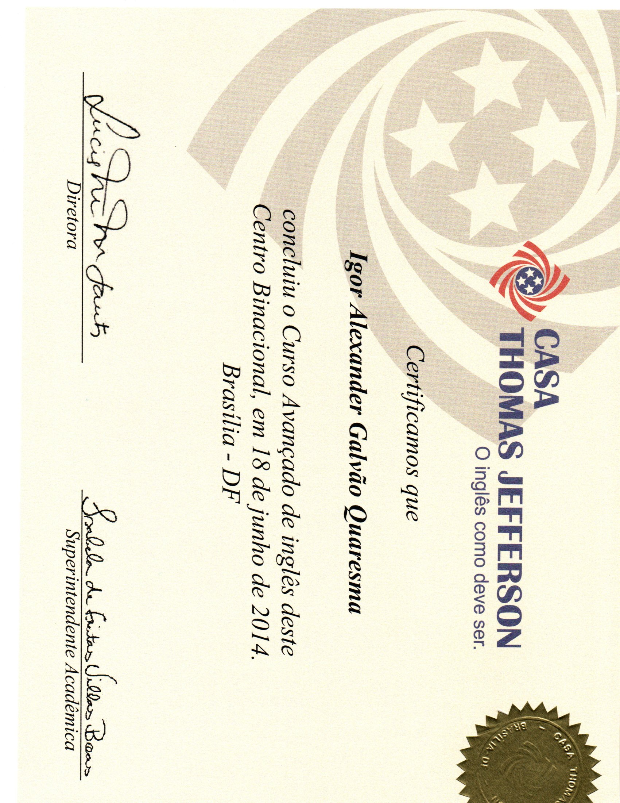
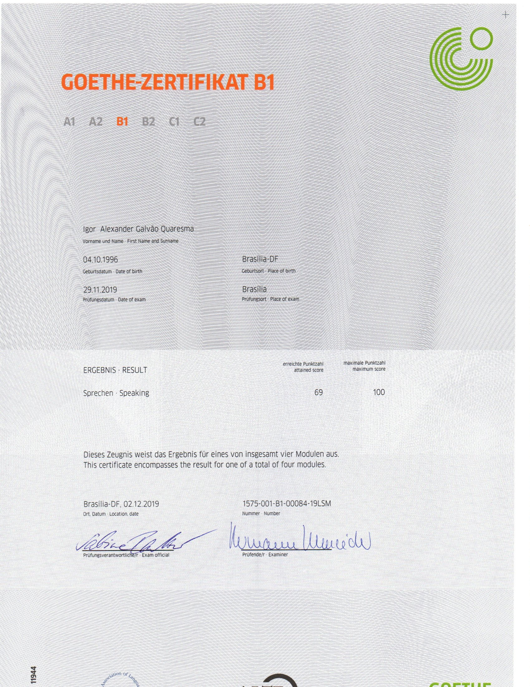

* Experiência profissional *
Brasal Refrigerantes

Em Maio de 2019 tive minha primeira experiência de estágio, na empresa Brasal Refrigerantes. Na empresa estagiei no escritório de engenharia logística durante um ano. Tive a oportunidade de realizar e participar de diferentes projetos: mapeamento de processos e fluxos de veículos, simulação, verticalização do estoque, desenvolvimento e acompanhamento de indicadores do painel logístico da Coca Cola.
O projeto de mapeamento de fluxos de veículos consistiu em um projeto para otimização do fluxo de veículos internamente a fábrica. O projeto surgiu como uma demanda do diretor geral, haja vista que o pátio utilizado para carregamento e descarregamento dos veículos estava sempre com uma grande aglomeração de veículos, o que causava atrasos nas diversas operações que ocorriam naquele local. Inicialmente, a fim de entender o problema que estava ocorrendo, realizei uma etapa de observação / estudo de como os fluxos de veículos ocorriam na fábrica. Para isso, fui para diferentes pontos da fábrica em diferentes horários para observar as operações. Após essa etapa de observação inicial, entrei em contato com os responsáveis por diferentes áreas envolvidas de alguma forma com movimentação de veículos no pátio. Essa etapa foi muito importante, pois além de tirar dúvidas que havia observado na etapa anterior, coletei sugestões dos responsáveis do que poderia ser uma possível forma de otimizar aquela parte específica da operação. Com as informações obtidas, realizei algumas análises e com esses resultados, desenvolvi gráficos para mostrar os resultados para meus gestores. Com essa etapa foi possível entender o problema real que estava ocorrendo, e a partir disso desenvolver alguns cenários com possíveis soluções. Ao final do projeto com o cruzamento das informações, chegou-se a conclusão de alterar o horário que dois processos ocorriam, além de implementar um sentido único de trânsito internamente a fábrica.
O projeto de verticalização do estoque consistiu em um projeto para compra e instalação de novas estruturas de armazenagem no estoque. Esse projeto envolveu várias áreas da empresa, inicialmente, pós compra das estruturas, fiquei responsável por desenvolver toda logística de transporte das estruturas de onde essas foram compradas até a sede da Brasal Refrigerantes. Era responsável por achar possíveis fornecedores, realizar requisição de contratação para área de suprimentos da Brasal e esquematizar dia e horário dos fretes a fim de que nossa operação de recebimento conseguisse absorver a demanda. Dentro dessa etapa, realizamos 37 fretes com carretas. Todo o controle de quantidade de equipamento carregado, nome do motorista, empresa contratada e placa da carreta era diariamente checado. Após todas as estruturas terem sua entrega finalizada com sucesso, iniciou-se uma nova etapa do projeto, a qual consistiu no estudo de tempos e movimentos das empilhadeiras dentro da fábrica. Nessa etapa do projeto objetivou-se entender os novos tempos que as empilhadeiras utilizariam para armazenar os produtos. O estudo foi realizado combinando dados observados durante a operação e dados de simulações realizadas no software Arena. Após finalizar esses estudos, foi possível recomendar a quantidade de novas empilhadeiras elétricas que deveriam ser compradas e consequentemente a quantidade de novos operadores de empilhadeira que deveriam ser contratados. Além disso, determinou-se a melhor área de estocagem para cada tipo de produto da fábrica.
Além dos projetos citados, era responsável pela execução de um processo mensal que consistia na compilação, análise e envio de dados para o painel nacional logístico da Coca Cola. Nesse processo era responsável por realizar a ponte de todas as áreas da logística da empresa (transportes, distribuição, estoque, engenharia logística) com a empresa responsável pelo painel logístico (ILOS). Essa ponte envolvia a cobrança dos dados de cada área, e posteriormente a compilação e validação desses dados. Por ser um processo que consumia uma grande quantidade de tempo, ao longo do meu estágio fui automatizando algumas dessas tarefas com a utilização de macros e VBA.
A oportunidade de estagiar em uma indústria foi muito importante para o meu desenvolvimento em diversos conceitos da engenharia de produção como um todo, mas principalmente na área de logística.
Disney International College Program (ICP)

Durante o ano de 2017 fiquei sabendo que a Disney realizava um programa de intercâmbio de trabalho para alunos universitários, tanto de instituições americanas, como de instituições de outros países. Assim que fiquei sabendo sobre o programa eu já tentei aplicar para o mesmo, porém, como as etapas de avaliação do processo já haviam começado naquele ano, eu teria que esperar e aplicar para o programa no ano seguinte (2018).
Ao longo de 2018, enquanto estava trabalhando na empresa júnior, agora já sabendo mais sobre o processo seletivo, prestei atenção e consegui me inscrever na primeira etapa do processo seletivo. A primeira etapa do processo ocorreu na cidade de Goiânia. Essa etapa consistia em comparecer em uma palestra de abertura, a qual algumas dúvidas sobre o programa foram tiradas, e uma entrevista presencial realizada em trios e em inglês com recrutadores da STB (empresa terceirizada pela Disney para realizar essa primeira etapa do processo). Assim, após realizar essa etapa, fiquei cerca de dois meses esperando o resultado. Após ser aprovado, me preparei mais e fui para a segunda etapa do processo, a qual ocorreu na sede da Rádio Disney em São Paulo. Essa etapa consistiu em uma entrevista presencial individual em inglês com um dos recrutadores do Walt Disney World e posteriormente, análise de documentos, como currículo, carta de interesse entre outros. Após uma semana, recebi o email que havia sido aprovado no programa, estava oficialmente a caminho de tornar-me um cast member.
No dia 24 de novembro de 2018 embarquei para Orlando, onde viveria um das melhores experiências da minha vida. Nas primeiras duas semanas participei de treinamentos teóricos gerais sobre a Disney, os quais foram uma experiência incrível para aprender mais sobre os processos e cultura da empresa. Após o término da segunda semana, conheci a atração que iria trabalhar. Pela próxima semana obtive treinamento teórico e prático específicos da "Haunted Mansion", uma das atrações mais movimentadas do Magic Kingdom, parque de maior movimentação de clientes no complexo Disney. Trabalhei até o dia 31 de Janeiro de 2019. Além de aprender muito sobre a cultura e processos da empresa, tive oportunidade de praticar muito o inglês, haja vista que toda nossa comunicação com os clientes e colegas de trabalho era realizada nesse idioma. Como um complemento do inglês, aproveitando que estudo a língua alemâ, também tive oportunidade de praticá-la com clientes alemães. Além disso, pratiquei muitas softskills, haja vista que diariamente tinha que resolver os mais diversos tipos de problemas, saber comunicar da forma correta com os clientes era muito importante. Trabalhar em equipe com pessoas das mais diversas culturas foi uma excelente forma de melhorar essa capacidade minha.
Sempre respeitei muito a Disney como empresa, a Disney fez parte da minha infância com diversos de seus filmes, fez parte da minha adolescência com seus parques temáticos incríveis. Trabalhar e ter a oportunidade de imergir na cultura dessa empresa contribuiu para aumentar ainda mais meu respeito pela empresa.
Grupo Gestão Consultoria

No ano de 2016 fiquei sabendo que o processo seletivo para entrar na empresa júnior do meu curso estava aberto. Na época ainda não tinha muito conhecimento sobre o Movimento Empresa Júnior (MEJ). Porém, entendi que essa poderia ser uma excelente oportunidade de aprendizado. Entrei no processo seletivo, cheguei até a última etapa desse, porém não passei. No ano seguinte realizei o processo seletivo novamente, porém dessa vez me preparei melhor, o esforço valeu a pena, fui aprovado e iniciei minha jornada de muito aprendizado no Movimento Empresa Júnior.
Inicialmente fiquei durante um semestre como trainee, tempo em que aprendi e pratiquei vários conceitos em diferentes projetos, os quais eram avaliados pelos membros já efetivados da empresa. Ao final do trainee fui aprovado e efetivado como membro.
Dentro da EJ (Empresa Júnior) comecei minha jornada como consultor onde fiz dois projetos, um de plano de negócios para uma franquia do ramo de saúde da mulher em Brasília, e outro de análise de mercado para um pequena empresa do ramo de petshop também da cidade de Brasília. Após minha experiência como consultor, fiz o processo seletivo interno para gerência de marketing e obtive aprovação. Como gerente de marketing elaborei e editei vídeos para marketing externo e interno. Monitorei campanhas de google ads, recebimento de passivos entre outros. Após minha passagem pela área de marketing, apliquei para um nova área, gerência de finanças e operações. Nessa gerência obtive o maior desafio e maior aprendizado durante minha jornada de EJ. Nessa gerência, mais especificamente no ramo de finanças, era responsável pelo controle de todas as contas a pagar e receber, elaboração e acompanhamento do planejamento financeiros e demais indicadores financeiros. No ramo de operações era responsável por criar conjuntamente com o RH da empresa treinamentos para membros, desenvolver e acompanhar indicadores de operações, realizar reports da empresa para a Concentro (Federação de Empresas Juniores do Distrito Federal). Trazer insights de outras EJs, federações e de outros cursos para membros internos.
A minha jornada de empresário júnior foi formada por muitos desafios e conquistas, trabalhar com o objetivo de se capacitar e ao mesmo tempo ter a oportunidade de auxiliar empreendedores locais foi uma experiência incrível e sempre ficará marcada na minha vida.
* Mais Sobre *
Jogos Olímpicos Rio 2016


No ano de 2016 fui voluntário nos Jogos Olímpicos Rio 2016. Tive a oportunidade de trabalhar na área de "International Relations and protocol operations" (relações internacionais e operações de protocolo) na Arena Carioca I, arena destinada aos jogos de basquete. Era responsável pela família olímpica, portanto era responsável pela operação dos assentos e lounge VIP de membros do comitê internacional, representantes do governo, árbitros e atletas. Ao longo do trabalho tinha que me comunicar em inglês e português, juntos com meus colegas tinha que garantir que todas as necessidades da família olímpica eram atendidas. Poder trabalhar em um evento internacional da magnitude das Olimpíadas contribuiu muito para ampliar minha visão do mundo.
Intercâmbio de estudo em inglês (Toronto - CA)
 

Em 2014 finalizei meu curso de inglês no Brasil, visando praticar e aprimorar ainda mais o idioma, realizei um intercâmbio de estudos, em 2016, durante 2 meses na cidade de Toronto. Ao longo da minha estadia na cidade, além de ter aulas para aprimoramento do idioma, tive a oportunidade de conhecer e viver a cultura canadense. Já era fluente no inglês, porém a oportunidade de praticar o idioma 24 horas por dia, tanto na escola como em situações práticas do dia a dia contribuiu muito para a minha fluência e segurança em falar o idioma.
Idiomas
Inglês

No final de 2014 finalizei meu curso avançado de inglês na Casa Thomas Jefferson, a oportunidade de estudar inglês foi e é fundamental até hoje na minha vida para diversas oportunidades. Ter estudado inglês me possibilitou trabalhar durante as Olímpiadas, trabalhar na Disney, morar e estudar um período de tempo em Toronto, desenvolver trabalhos acadêmicos, etc.
ALemão

Assim que entrei na Universidade, já com o curso de inglês finalizado, buscando aproveitar meu tempo e me qualificar ainda mais, comecei a estudar alemão. Inicialmente estudei no próprio instituto de línguas da Universidade, após alguns meses, comecei a fazer o curso no Goethe Zentrum Brasília, onde estou estudando até hoje.